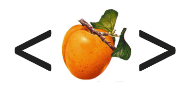

Hpricot 0.1 #

gem install hpricot --source code.whytheluckystiff.net
Hpricot is a nice, loose HTML parser for Ruby, written in C. I stole a bunch of code and ideas from HTree, Prototype and JQuery. The gem requires a compiler. It’s 0.1, so it’s kinda wobbly, but hey.
require 'hpricot'
doc = Hpricot.parse(File.read("index.html"))
(doc/:p/:a).each do |link|
p link.attributes
end
FlashHater
Wow, I have to say, that is one heckofa cute logo. And now I can write screen scraper-driven applicantions with Ruby quickly!
der-matthias
Hey, the logo looks nice. The link behind it throws throws a 404 at me, though. Hpricot may be what I’ve been searching for during the last weeks.
Is there any chance of supplying a win32-gem?
Rubbing my hands in restless anticipation I wonder if Hpricot is only able to parse HTML or if it can write back the parsed and modified HTML to a file again? Are comments left intact while parsing?
der-matthias
Okay, the actual link behind the logo should be http://code.whytheluckystiff.net/svn/hpricot/
Should have figured that out before. Too. Early. This. Morning.
Okay, a quick look reveals output.rb with definition of a Comment class. Proooomising, I say.
win32-gem, anyone? ;-)
ph
You should also take a look at Rubyful Soup It’s like this, but isn’t quite the same.
der-matthias
ph, thank you. I already tried RubyfulSoup but unforunately the keep-comments-don’t-throw-em-away feature only exists in the Pythonistician version BeautifulSoup 3.0 and hasn’t been ported to the current RubyfulSoup 2.x, yet.
RubyfulSoup has a really nice interface and is a joy to use, though.
Otherwise I presume Hpricot will kick its ass performance wise.
jonah
i’ve used Rubyful Soup before. It certainly worked – the only pain being it’s waay slow (partly thanks to Ruby’s somewhat snail-like athletics and partly cos it tries to turn it into an XHTML doc)
is Hpricot faster ?
kastner
I just hacked something together with WWW ::Mechanize yesterday. _Why – does your kind sleep at all?
agr
Make it
- parse real life broken html - faaaassst! - have a nice interface like rexml
and you have a winner.
why
Sorry, my friends, that link works now. Also, the XML feed is showing up now. If you already subscribe to my repository feed, you’ll see it there as well.
Hpricot is less than one day old, so I’m not anywhere near polishing it up yet, but the goal is:
I mean “better” as in “I like it more.” I borrow from JQuery’s interface, which lets you use CSS selectors or XPath.
require 'hpricot' doc = Hpricot.parse("index.html") doc.search("//p[@class='intro']/a") doc.search("p.intro a")Yeah, so, those two searches are equivalent. And, as in JQuery, you can alter settings for a group of elements without looping through them.
john
Great code _why. It’s amusing, pouring through the code I could find some of the direct ports from jQuery. It’s amusing seeing the code being translated into Ruby – and just how similar it tends to look. Great job!
why
Oh, the JQuery code is fantastic. Porting the css+xpath parser was so much easier than trying to think through it all myself.
complex
wget http://redhanded.hobix.com/index.htmlprompt>cat hptest.rb require 'rubygems' require_gem 'hpricot' doc = Hpricot.parse("index.html") (doc/:p/:a).each do |links| p link.attributes endproduces no output. am on _why-approved freebsd 5.3. what have i done wrong to upset the _why gods? i will sacrifice this bit of honey ham i have in my pocket, if need be.ryan
You should look at scrapi< it does a lot of the same CSS goodness.
serg
It doesn’t work for me either. I feel left out of the club.
why
Well, there’s a spelling error. Should be:
jonah
is it going to be a long time b4 this is available for us stone-age win32 peeps ?
FlashHater
Can you say, Ruby-flavored search engine? Slap this onto a web crawler and watch it work.
der-matthias
Wow, I’m so jealously watching on those who already got this sweet Hpricot into their mouths.
I never had the drive to get any of these DYI -compilations flying under win32 but Hpricot finally gets me going, I guess.
Is there any thorough tutorial out there on how to help these kind of ruby jewels on their feet under win32?
I’m eager to continously supply a win32-gem for Hpricot if only someone could get me going on this for the first time.
der-matthias
PS: Thank you so much, _why.
serg
_why: Still no go. That block never runs once for me.
why
ryan: Ohh, scrapi’s cool. It uses htmltools just like RubyfulSoup, but the interface is wildly different. Anyone else have any obscure HTML parser toolkits I can look at?
serg, der-matthias: Hang in there. For now, I’m focused on trying to rewrite HTree. But after that, I’ll work on getting gems working and cross-platform.
FlashHater
_why, you should install Hpricot on Try Ruby! with some pages to show its coolness.
In other news, I’ve taken the Hpricot logo and put it onto a CafePress shop (no profits for me) here
assaf
_why: scrapi is a framework for writing Web scrapers. You can use it to quickly write up scraping rules and extract data from HTML .
For HTML parsing/cleanup it currently uses Tidy or htmltools. If hpricot can parse that fast, I’d like to try it for a future release. Cut down processing time.
Right now I’m wrapping up the 1.0 release, in time for Mashup Camp II. I’ll post more details on my blog next week.
And I’m going to watch where hpricot is going. 5x-10x is seriously impressive!
rixxon
How is this related to Mongrel? http://code.whytheluckystiff.net/hpricot/browser/trunk/Rakefile#L22
der-matthias
rixxon: I suppose this is a simple copy and paste error, not more.
Mongrel, too, is driven by a parser that is generated by Ragel
Maybe _why left this error message in the Rakefile as a tribute to Mongrel’s fancy idea of not hand crafting a parser.
Ian
Ruby is in need of a decent HTML parser, thanks for creating this project!
It’s looking good so far, although two small things I’ve come across:
1. Is it possible to do a case-insensitive search? 2. A remove method would be handy for the Elem class.
Oh, and if you replace_child with nil it falls over when you output the html.
Cheers.
why
Ian: 0.4 and on is case-insensitive. 0.4 also has a
removemethod for theElementsclass. Glad you brought up the replace_child problem, thanksss!